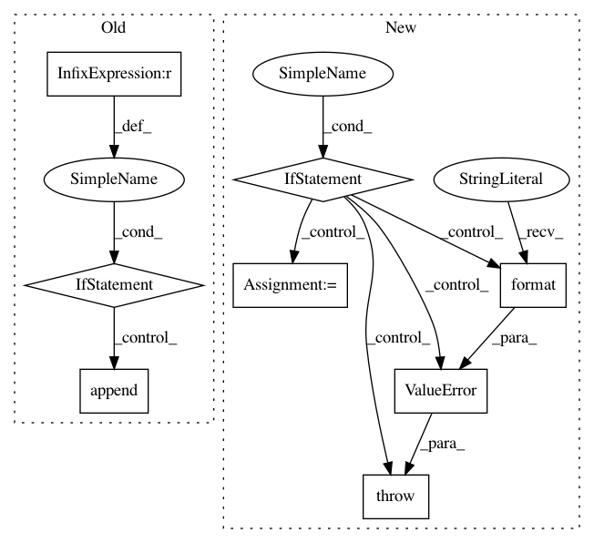

998b0e8f1c3ec165fc1ca7b6421c96b1c72ec297,tensorflow_transform/analyzers.py,Analyzer,__init__,#Analyzer#Any#Any#Any#Any#,116
Before Change
self._name = scope
for dtype, shape, is_asset in output_dtype_shape_and_is_asset:
output_tensor = tf.placeholder(dtype, shape)
if is_asset and output_tensor.dtype != tf.string:
raise ValueError(("Tensor {} cannot represent an asset, because it "
"is not a string.").format(output_tensor.name))
self._output_infos.append(_AnalyzerOutputInfo(
output_tensor.name, is_asset))
self._spec = spec
tf.add_to_collection(ANALYZER_COLLECTION, self)
@property
After Change
"In analyzer {}, the {}th input ({}) was not a Tensor".format(
name, index, tensor))
for index, tensor in enumerate(outputs):
if not isinstance(tensor, tf.Tensor):
raise ValueError(
"In analyzer {}, the {}th output ({}) was not a Tensor".format(
name, index, tensor))
self._inputs = inputs
self._outputs = outputs
self._spec = spec
self._name = name
@property
In pattern: SUPERPATTERN
Frequency: 3
Non-data size: 8
Instances
Project Name: tensorflow/transform
Commit Name: 998b0e8f1c3ec165fc1ca7b6421c96b1c72ec297
Time: 2018-05-30
Author: tf-transform-dev@google.com
File Name: tensorflow_transform/analyzers.py
Class Name: Analyzer
Method Name: __init__
Project Name: sentinel-hub/eo-learn
Commit Name: 136874cacff5ae68ad1ba0d3bec730cc1261f9e9
Time: 2019-10-14
Author: jovan.visnjic@sinergise.com
File Name: io/eolearn/io/processing_api.py
Class Name: SentinelHubProcessingInput
Method Name: get_dates
Project Name: tensorflow/transform
Commit Name: 998b0e8f1c3ec165fc1ca7b6421c96b1c72ec297
Time: 2018-05-30
Author: tf-transform-dev@google.com
File Name: tensorflow_transform/analyzers.py
Class Name: Analyzer
Method Name: __init__
Project Name: tensorflow/transform
Commit Name: d7a7dd6fe7106f6501e9995a92153f65238bbb47
Time: 2019-06-21
Author: tf-transform-dev@google.com
File Name: tensorflow_transform/analyzers.py
Class Name: QuantilesCombiner
Method Name: add_input